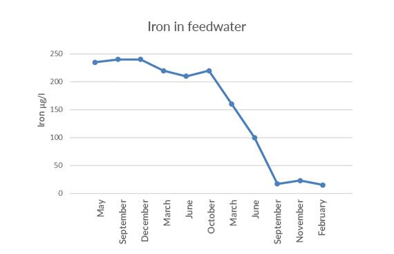

Мешочные фильтры для механической фильтрации
Мешочные фильтры идеально подходят для фильтрации с высокими требованиями к скорости потока и пространству. Используется для фильтрации котловой и охлаждающей воды, циркуляционной воды в установках централизованного теплоснабжения, промывочной воды в промышленности по обработке поверхностей и в электронной промышленности, а также для технологических ванн и т.д.
Мешочный фильтр имеет прочную конструкцию, что делает его пригодным как для холодных и горячих, так и для кислотных и щелочных жидкостей. Они просты в монтаже и обслуживании и не требуют воды для промывки.
Мешочные фильтры для широкого спектра применений
В каких случаях необходимо использовать мешочные фильтры
.jpg)
Фильтрация воды централизованного теплоснабжения
Циркуляционная вода в установках централизованного теплоснабжения не должна содержать шламов и механических примесей, вызывающих коррозию и засорение регулирующего оборудования. Мешочный фильтр для горячей воды подходит для частичной фильтрации потока. Тип EFG5 разработан специально для систем централизованного теплоснабжения.
Фильтрация для технологических ванн
При обработке поверхностей мешочный фильтр может обеспечить чистоту технологических ванн, что продлит срок службы инструментов. Специальные фильтровальные мешки, предназначенные для ванн обезжиривания и фосфатирования, продлевают срок службы ванны, тем самым уменьшая количество сточной воды и риск засорения форсунок и клапанов в системе.
Защита мембран
Все источники воды содержат органические вещества, поэтому предварительная фильтрация важна в процессе очистки воды для защиты и продления срока службы других установок, таких как установки обратного осмоса.
Оптимальная фильтрация с магнитной вставкой
Магнитная вставка эффективна для улавливания небольших магнитных частиц, обычно не удерживаемых фильтровальным мешком. Таким образом, мешочный фильтр с магнитной вставкой обеспечивает оптимальную фильтрацию.
Верхняя часть подходит для всех существующих решений, что делает модернизацию легкой и доступной по сравнению с заменой всего мешочного фильтра.
.jpg)
Кейс
Восстановление железа в питательной воде с помощью магнитной вставки
Датская компания централизованного теплоснабжения Hvide Sande Fjernvarme обнаружила высокое содержание железа в питательной воде. Менеджер по производству Мартин Кристенсен объясняет:
«Нам пришлось что-то делать с содержанием железа в воде, потому что оно превышало рекомендации Датской ассоциации централизованного теплоснабжения (100 мкг/л). вставьте. Кажется, это сработало!"
Снижение содержания железа в системе централизованного теплоснабжения является частью управления активами. Риск коррозии котлов, клапанов, фитингов, установок и подземных трубопроводов значительно снижается.

Обзор продукта
Ассортимент нашей продукции включает в себя большое количество стандартных установок, спроектированных и изготовленных на собственном производстве. Отправной точкой является наша модульная стандартная система, обеспечивающая высокую гибкость, высокую надежность в эксплуатации и короткие сроки поставки. Каждое решение может быть индивидуальным и построенным в соответствии с конкретным применением путем подбора материалов, контрольно-измерительных приборов и системы управления - на основе нашего совместного ноу-хау.
Конструкция установок
Мешочные фильтры состоят из корпуса фильтрас крышкой и экраном поддержки для сменного фильтра-мешка. Корпус фильтра доступен с различным материалом поверхности внутри и снаружи в зависимости от задачи фильтрации.
Свяжитесь с Вашим местным офисом продаж и обслуживания для получения дополнительной информации, технических паспортов или инструкций.
Производительность до 12 м3/ч
| Тип: | EF2 |
| Макс. рабочее давление: | 6 бар |
| Макс. температура: | 35oC |
| Диапазон pH: | 1-13 |
Производительность до 22 м3/ч
| Тип: | EF5/EFG5 |
| Макс. рабочее давление: | 6 бар |
| Макс. температура: | 100oC |
| Диапазон pH: | 1-13 |
Производительность до 22 м3/ч
| Тип: | EFG7 |
| Макс. рабочее давление: | 16 бар |
| Макс. температура: | 100oC |
| Диапазон pH: | 7-13 |
Производительность до 22 м3/ч
| Тип: | EFG8 |
| Макс. рабочее давление: | 6 bar |
| Макс. температура: | 100oC |
| Диапазон pH: | 7-13 |
Также доступныустановки смонтированные на раме
Мешочные фильтры также доступны в виде установок на раме
с насосом или без него, а также с двумя или более мешочными фильтрами для более высоких расходов.
В списке показан выбор установок на раме.
Производительность до 22 м3/ч
Блок на раме с 1 мешочным фильтром EFG5 со сварной системой труб, включая манометры и насос
Тип продукта: EFG5P-F
Производительность до 30 м3/ч
Установленный на раме блок с 2 мешочными фильтрами EF5 с системой труб из ПВХ, включая манометры и запорную арматуру
Тип товара: 2-EF5-F
Производительность до 40 м3/ч
Блок на раме с 2 мешочными фильтрами EFG7P со сварной системой труб, включая манометры и насос
Тип продукта: 2-EFG7P-F
Индивидуальные
Высокая скорость потока
Рукавные фильтры можно соединять последовательно для получения высокой скорости потока. На фотографии показана установка с 10 рукавными фильтрами типа EFG7 в компании централизованного теплоснабжения в Германии.
Узнать больше о рукавной фильтрации
Загрузите нашу брошюру, чтобы получить больше информации о наших системах рукавных фильтров.
См. референсы с мешочными фильтрами
Отображение 3 из 11 Референции
.jpg)
.jpg)
Деионизированная вода для зон ополаскивания при предварительной обработке п...
Промывная водаАвтоматизированная индустрияПромышленность по обработки поверхностей
Деионизированная вода для предварительной обработки без содержания хрома
Промывная водаПромышленность по обработки поверхностей
Новый декализатор для французской пивоварни
Вода для пивоваренИнгредиентная ВодаТехнологическая водаПромывная водаПроизводство напитковПивоварниПищевая промышленность
Очистка конденсата дымовых газов на ТЭЦ, работающей на биомассе
Очистка конденсата дымовых газовТеплоэлектростанции
Очистка конденсата дымовых газов на установке по сжиганию отходов
Очистка конденсата дымовых газовТеплоэлектростанции
.jpg)
Промывочная вода для обработки поверхностей в автомобильной промышленности
Промывная водаАвтоматизированная индустрияПромышленность по обработки поверхностей